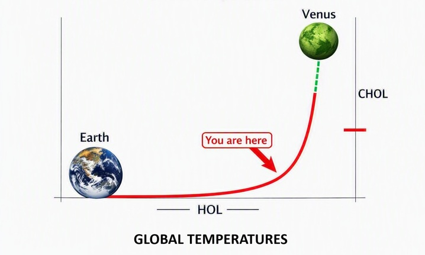

To understand why scientists are increasingly concerned about tipping points, what a tipping point actually is, and why multiple tipping points interacting together can produce rapid and accelerating climate change.
To understand the terrifying velocity of planetary collapse, we must first understand a limitation of ancient language. The authors of antiquity lacked the modern vocabulary of advanced mathematics; ancient Greek had no word for "exponential." When John of Patmos witnessed a vision of a world fracturing under compounding, self-reinforcing trauma, he could not describe the trajectory using charts, slopes, or algebraic variables. Instead, he had to express the concept of rapid, runaway multiplication through the language of systemic retribution. This is why the Book of Revelation commands of Babylon,
"Render to her just as she rendered to you, and repay her double according to her works; in the cup which she has mixed, mix double for her."This "doubling" is not a static, one-time penalty; it is the ancient idiom for a compounding feedback loop, where the consequences of systemic failure turn back upon the system itself with multiplied fury.
This structural doubling is meticulously woven into the very architecture of the apocalypse. The biblical judgments do not unfold as a linear list of independent disasters; they are engineered as a series of seals, trumpets, and vials that structurally compound upon one another. Each sequence is nested within the climax of the previous one, with each broken seal or sounded trumpet acting as an accelerating mechanism that triggers the next, more severe tier of collapse. A disruption in the heavens triggers a failure of the waters; a failure of the waters collapses the agriculture; the collapse of agriculture ignites war, famine, and economic ruin. John was not looking at a sequence of random catastrophes—he was describing a network of interconnected, exponential tipping points collapsing a civilization in real time. This scriptural pattern matches the exact physical reality of our modern climate system.
My only income is voluntary donations.
Donate GumroadA climate tipping point is not a gradual shift; it is a permanent break. It is the exact moment when a natural system becomes so severely stressed that it changes suddenly, fundamentally, and irreversibly. Once a tipping point is crossed, the system loses its internal stability, and it cannot return to the way it was.
Think of it like leaning back in a chair. You can tilt backward a few inches and balance safely—this is a system absorbing stress. But if you tilt just one millimeter too far, you pass a critical threshold. Gravity takes over, the balance shifts completely, and you crash to the floor. No amount of effort mid-fall can bring you back to an upright position.
Before a tipping point is reached, the Earth’s natural systems act as balancing mechanisms that actively absorb disturbances. After the threshold is crossed, those same systems change their character entirely. Instead of resisting warming, they begin amplifying it.
The deepest danger of global warming is that the Earth does not operate as a collection of separate, isolated compartments. The atmosphere, the oceans, the ice sheets, and the global forests are all interconnected parts of a single, linked machine. Because these systems are codependent, environmental failures never remain isolated.
When one tipping point is crossed, it pushes the next one forward, triggering a cascade—a self-executing chain reaction of planetary failures. We are already watching these regional thresholds weaken and drop like dominoes:
Each individual collapse accelerates the next. This cascading pattern of interconnected, self-reinforcing destruction is the physical reality of a planetary system losing control.
For decades, early climate models operated under a flawed assumption: that warming was dangerous only because of how much heat accumulated over time. Scientists have recently realized that what matters just as much—and in some cases, far more—is how fast the temperature rises. This is known as rate-driven amplification.
A natural system under slow, gradual stress can often adapt, find new equilibrium, or regenerate. A system under rapid, high-velocity stress cannot.
When the rate of warming accelerates, ecosystems lose their ability to adjust:
Tipping points do not break simply because the world is hot. They break because the world is heating too quickly for the planetary machinery to absorb the shock. The speed of warming itself becomes an uncontrollable force multiplier.
Once the rate of warming becomes part of the process, exponential behavior is guaranteed. Faster warming weakens forests. Weakened forests produce less rain. Less rain increases heat. Increased heat melts ice faster. Faster melt disrupts ocean currents. Disrupted currents destabilize weather. Destabilized weather damages forests further.
Every step exacerbates and amplifies the next step. Every amplification increases the rate of warming. And the increased rate of warming amplifies every tipping point again.
This is the definition of an exponential curve: a process where the speed of change increases the strength of the next change. Early climate models assumed warming was linear. But once the rate of warming becomes a driver of collapse, the slope bends upward. The curve becomes exponential because the system is feeding back into itself.
With multiple tipping points adding to the acceleration of each other tipping point it relates to, the exponential curve becomes exponentially exponential.
The world's largest, fastest supercomputers are incapable of calculating exponential numbers like this. No one is. The metaphor is "You're on a freight train to Venus. At random intervals unknown numbers of rocket boosters are added to the train, increasing it's speed and velocity." You don't know when the train will arrive, except sooner than expected.
The following chart illustrates the accelerating nature of global temperature rise — the curve that begins gently and turns sharply upward, symbolizing the transition from stability to runaway feedback.

The curve represents the exponential acceleration of planetary warming. “You are here” marks the present inflection point.
Venus is a real example of what happens when a planet’s climate system enters runaway feedback. Its average surface temperature is around 867°F (464°C) — hot enough to melt lead. The planet is covered in a thick atmosphere of carbon dioxide, with clouds of sulfuric acid that rain downward before evaporating in the intense heat. Volcanic activity is widespread across the surface, and the pressure at ground level is more than 90 times that of Earth’s atmosphere.
Venus is not “hot” in the way people imagine. It is a world where the climate engine has locked into a permanent, self‑reinforcing state — a greenhouse feedback loop that never stops. Once the process began, the planet’s temperature didn’t rise gradually. It rose exponentially, until the entire system became uninhabitable.
Scientists believe Venus may once have had conditions suitable for liquid water, and possibly even life. Whether it truly supported life is irrelevant. What matters is that Venus stands as a signpost: a planet that crossed too many tipping points, too quickly, and entered a runaway state that could never reverse.